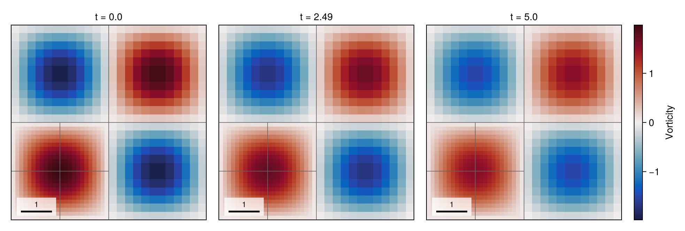
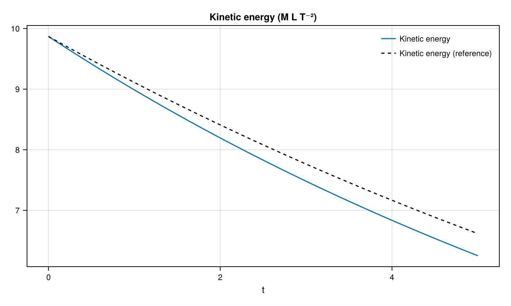

01 – Taylor–Green vortex
A periodic vortex decays by viscosity on a fixed mixed-level mesh, with kinetic energy compared against the exact solution.

At a glance
| Physics | Single phase, density 1, Reynolds number reynolds=50 and kinematic viscosity 1/reynolds=0.02; periodic square [0, 2π]². |
| Algorithms | Staggered FaceVelocity; Lax–Wendroff momentum advection with a monotonized-central coarse–fine flux, implicit-midpoint diffusion and pressure projection. Pressure uses CG/tree-geometric multigrid; diffusion uses tree multigrid and selects CG or BiCGSTAB by matrix symmetry. The (0, 0) branch is statically refined through max_level=2; no dynamic refinement. Automatic time stepping uses CFL 0.45. |
| Worth varying | reynolds=50 changes the decay rate; max_level=2 changes the fixed mesh; final_time=0.2 changes the run duration; dt=nothing selects an automatic step, while a numeric dt fixes it. |
| Validated against | Exact kinetic-energy decay π²exp(-4t/reynolds) versus :kinetic_energy: at docs size and t=5, numerical energy is 6.25192 versus 6.61579 exact, an absolute error of 0.363876 (also the maximum sampled error). |
| Cost | Default: level 2, T=0.2, 1008 cells and 7 steps; setup and simulation took 0.13 s warm and 5.5 s on the first call, which includes compilation. Docs: level 2, T=5, 1008 cells and 169 steps; setup and simulation took 5.29 s and the whole figure script 22.24 s, including first-use compilation and rendering. |
The gallery timings use Julia 1.12.7, one Julia thread and one BLAS thread; package loading is excluded and compilation costs depend on previous cases in the process.
Setup
With density one and viscosity ν = 1/reynolds, the periodic solution is
\[u=e^{-2\nu t}\sin x\cos y,\qquad v=-e^{-2\nu t}\cos x\sin y,\qquad E(t)=\tfrac12\int_{[0,2\pi]^2}(u^2+v^2)\,dx\,dy =\pi^2 e^{-4\nu t}.\]
The numerical energy is the face-dual-volume-weighted KineticEnergy() diagnostic, not an analytical value normalized to its initial numerical sample. See the method reference for the staggered discretization, diffusion, projection and solvers.
Run
From the repository root, run headlessly:
using TwoPhaseAMR
include("examples/01_taylor_green/taylor_green.jl")
run = run_example(max_level = 2, final_time = 5.0)
energy = diagnostic_history(run.flow, :kinetic_energy)Run the example headlessly or generate the static figures with CairoMakie:
julia --project=examples examples/01_taylor_green/taylor_green.jl
julia --project=examples examples/01_taylor_green/make_figures.jlAppend --studio to the example command to follow the run in a browser; press Ctrl+C to close Studio after the run.
The figure entry point accepts make_figures(; outdir=..., size=:docs) or size=:default; it prints the simulation summary, energy errors and runtime.
Results
The hero shows vorticity at the initial, middle and final keyframes; titles use the actual nearest completed-step times, and each panel has its own symmetric color scale. Gray lines mark leaf blocks.

At t=5, the numerical energy is 6.25192, the exact energy is 6.61579, and their absolute difference is 0.363876.
Variations
After including the example, try:
run_example(reynolds = 100, final_time = 5.0) # slower viscous decay
run_example(max_level = 3) # finer mesh in one corner branch
run_example(dt = 0.01, final_time = 0.2) # fixed time stepFiles
- taylor_green.jl — simulation and recorded keyframes.
- make_figures.jl — headless snapshot and analytical-energy plots.